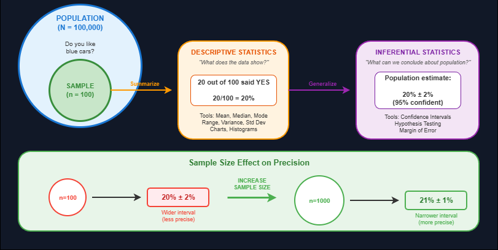
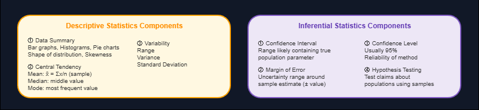

Statistics splits into two fundamental branches: descriptive and inferential. Understanding the distinction matters because they answer different questions. Descriptive statistics tells you what the data looks like. Inferential statistics tells you what conclusions you can draw about a larger population from a sample.

Descriptive Statistics
Descriptive statistics organizes and summarizes data using numbers and graphs. It describes what is present in the dataset without making claims beyond it.
Key components of descriptive statistics:
- Data summary visualizations: Bar graphs, histograms, pie charts. The shape of distributions and skewness patterns reveal data characteristics at a glance.
- Measures of central tendency: Mean, median, and mode. Mean (
x̄ = Σx/nfor sample,μ = Σx/Nfor population) gives the average. Median is the middle value when data is sorted. Mode is the most frequently occurring value. - Measures of variability: Range, variance, and standard deviation. These quantify how spread out the data is around the center.
Inferential Statistics
Inferential statistics uses sample data to make inferences or draw conclusions about a larger population. It relies on probability to determine how confident we can be that our conclusions are correct.
Practical Example
Consider a practical example. A city (XYZ) has 100,000 residents. Surveying everyone to ask "Do you like blue cars?" is impractical. Instead, survey a sample of 100 people. If 20 say yes, that is 20/100 = 20%. This 20% from the sample is descriptive statistics.
The inferential part comes next: how confident are we that the true population proportion is around 20%? With a sample of 100, the result might be reported as 20% ± 2% with 95% confidence. This means we are 95% confident the true population value falls between 18% and 22%.
Sample size affects precision. Increase the sample from 100 to 1000 people. If 21% say yes, the margin of error shrinks: 21% ± 1%. Larger samples yield better predictions with tighter confidence intervals.
Key inferential concepts:
- Confidence intervals: A range of values likely to contain the true population parameter
- Margin of error: The range of uncertainty around a sample estimate
- Confidence level: Probability (often 95%) that the interval contains the true value
- Hypothesis testing: Using sample data to test claims about populations
Common Use Cases
Common use cases for descriptive statistics include summarizing survey responses, creating dashboard reports, and exploring datasets before modeling. Inferential statistics is used in clinical trials, election polling, A/B testing, and quality control where testing every item is impossible.
Limitations
Limitations exist for both. Descriptive statistics cannot generalize beyond the data at hand. Inferential statistics requires representative samples; biased sampling leads to wrong conclusions regardless of statistical sophistication. Confidence levels are often misunderstood as the probability the true value lies in the interval, but the correct interpretation is about the reliability of the method over repeated sampling.
Summary
Descriptive statistics summarizes what you have. Inferential statistics estimates what you do not have. Both are essential for working with data.
